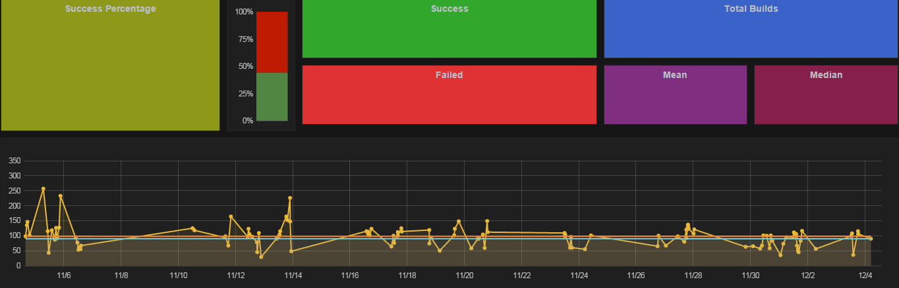
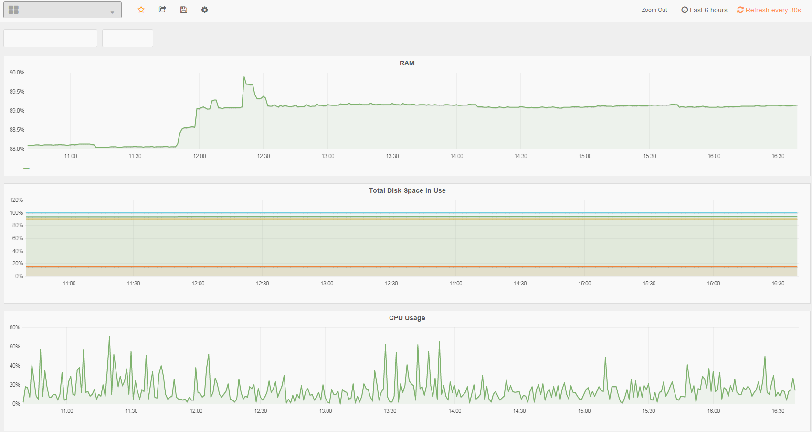

Oracle Eloqua

Co-Op Placement 1 | Dev-Ops
My main roles included providing users with VM access, running mySQL queries, support tickets through Jira, and also hot fixes through TeamCity.
I was able to familiarize myself with Windows and Linux systems. Moreover, I was also able to learn about agile development and the importance of stories. Aside from my main roles, I was also assigned side projects.
Overall, I feel that I have learned a lot in this co-op term. Aside from technical skills, I feel that my attention to details has improved tremendously as my position was really dependent on it.
Projects
TeamCity Build Times
I have worked with TeamCity's API to automate a data collection process in order to display the data onto Grafana (a time-series metrics dashboard). This process is done through running a cron-job on a VM to run a ruby script that I have written to retrieve the build logs of each build. The logs are then parsed, and the specific data is passed into the database, influxDB. The data inside influxDB is then displayed on Grafana. This has made it a lot easier to identify which builds are slowing down development.
Values and Database names have been removed for privacy concerns
VM Usage Data
Moreover, I have also created another dashboard that displays data regarding different VMS, specifically the VM's cpu usage, disk space, and also RAM Usage. This process is done through writing ruby scripts for Sensu monitoring system, which populates a Graphite database.This has made the monitoring of VMs a lot easier, as the information is displayed in one dashboard.
Values and Database names have been removed for privacy concerns
